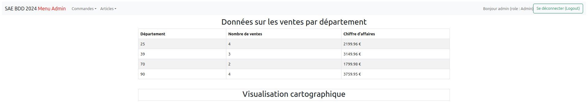

Développement d'une application web sécurisée pour la restitution de données commerciales par département.
La Figure si dessus représente une capture d'écran d'une application web développée avec le framework Flask, illustrant la restitution de données de ventes par département sous forme de tableau. L'objectif de cette application est de permettre à un administrateur ou à un utilisateur autorisé de visualiser, de façon synthétique, les performances commerciales par région.
Ce type d'application repose sur une architecture client-serveur : le client (navigateur web) envoie des requêtes HTTP au serveur (ici, une application Flask), qui traite la demande, interroge la base de données, puis renvoie une page HTML contenant les résultats. Ce modèle permet de centraliser la logique métier et la gestion des données, tout en offrant une interface accessible à distance.
La sécurisation de l'accès est essentielle : seuls les utilisateurs authentifiés et autorisés peuvent accéder à ces données sensibles. Cela implique la mise en place de sessions, de rôles utilisateurs, et de contrôles d'accès sur les routes de l'application.
La mise en œuvre de cette fonctionnalité m'a permis de consolider mes connaissances sur l'architecture web et la gestion des accès. J'ai su configurer le serveur Flask, définir des routes protégées par des vérifications de session et de rôle, et assurer la sécurité des échanges.
Sur le plan de la gestion des données, j'ai modélisé les entités nécessaires (ventes, départements, chiffre d'affaires) et conçu des requêtes permettant d'agréger les ventes par département. J'ai également appris à formater et transmettre ces données au format HTML pour un affichage dynamique et lisible.
Pour ce projet, j'ai mis en place un tableau de bord affichant en temps réel le nombre de ventes et le chiffre d'affaires par département. L'interface permet de visualiser rapidement les zones les plus performantes, ce qui constitue un indicateur clé pour le pilotage de l'activité.
Cette expérience m'a permis de maîtriser les bases du développement d'applications web sécurisées et orientées données. Toutefois, je dois encore progresser sur l'optimisation des requêtes pour des volumes plus importants , et sur la mise en place de formats d'export (CSV, JSON) pour faciliter l'exploitation des données par d'autres outils. À terme, je souhaite également intégrer des visualisations graphiques plus poussée (diagrammes, cartes) pour enrichir l'analyse et la prise de décision.